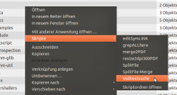
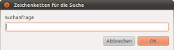
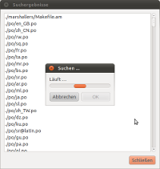

Volltextsuche
Dieser Artikel wurde für die folgenden Ubuntu-Versionen getestet:
Dieser Artikel ist größtenteils für alle Ubuntu-Versionen gültig.
Zum Verständnis dieses Artikels sind folgende Seiten hilfreich:
In Nautilus integriert gibt es eine Funktion zur Suche von Dateien anhand ihrer Dateinamen. Das Durchsuchen der Dateiinhalte nach bestimmten Suchwörtern ist jedoch nicht möglich. Das folgende in Nautilus integrierbare Skript soll Abhilfe schaffen.
Voraussetzungen¶
Diese Pakete sollten bei einer Standard-Installation [1] bereits vorhanden sein:
zenity
coreutils
 mit apturl
mit apturl
Paketliste zum Kopieren:
sudo apt-get install zenity coreutils
sudo aptitude install zenity coreutils
Installation¶
Die Installation von Skripten für Nautilus ist in Nautilus/Skripte beschrieben. Das Skript steht in deutscher und englischer Sprache zur Verfügung:


Hinweis!
Fremdsoftware kann das System gefährden.
Funktion¶
Das Skript kann mit grep nur Dateien durchsuchen die tatsächlich Text enthalten, wie z.B. txt- und html-Dateien. Komprimierte Dateien, die auch mit einem normalen Texteditor nicht lesbar sind, wie pdf- und odt-Dateien benötigen andere Lösungen.
Die Suche unterscheidet aus Zeit- und Ressourcengründen zwischen Groß- und Kleinschreibung. Dieses ist jedoch leicht im Skript durch hinzufügen einer Option zu ändern.
Dazu bearbeitet man das Skript in ~/.gnome2/nautilus-scripts und setzt in der Zeile:
find ./ -type f -exec grep -q "${SEARCHSTRING}" {} \; -print |\... ein -i für Ignore case.
find ./ -type f -exec grep -i -q "${SEARCHSTRING}" {} \; -print |\Bei größeren Datenmengen dauert die Suche dann entsprechend länger. Versehentlich ausgeführte Suchen lassen sich nur durch Stoppen des grep-Befehls im Terminal oder über die Systemüberwachung beenden.
Verwendung¶
Ist das Skript in Nautilus installiert, kann in einem beliebigen Verzeichnis das Skript im Kontextmenü gestartet werden. Der Rechtsklick sollte innerhalb eines Ordners erfolgen, so dass alle darunterliegenden Verzeichnisse mit durchsucht werden. Es erscheint ein Textfenster zur Eingabe des Suchbegriffs.
| So läuft der Suchvorgang ab: | ||
|  |  |  |
| Verzeichnis auswählen | Suchworte eingeben | warten |
Während der Suche erscheint ein Fenster, das das Fortdauern der Suche signalisiert. Im Hintergrund öffnet sich ein zweites Fenster, in dem die Ergebnisse aufgelistet werden. Ist die Suche abgeschlossen, schließt sich das erste Fenster.
 Übersichtsartikel
Übersichtsartikel- Erstellt mit Inyoka
-
 2004 – 2017 ubuntuusers.de • Einige Rechte vorbehalten
2004 – 2017 ubuntuusers.de • Einige Rechte vorbehalten
Lizenz • Kontakt • Datenschutz • Impressum • Serverstatus -
Serverhousing gespendet von